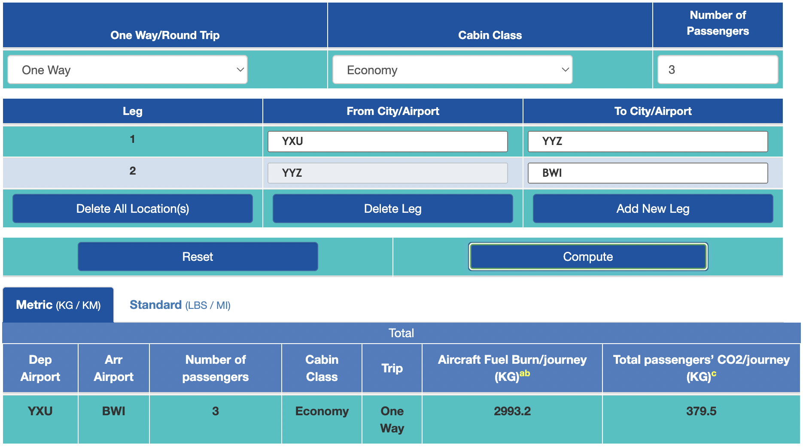

Last month, Catherine, Jahnavi, and myself attended the Dragonfly team meeting, held at the Johns Hopkins University Applied Physics Laboratory in scenic Laurel, Maryland. For the past few years, this meeting has been a chance for the entire Dragonfly team to convene and give updates on the current status of the mission, from logistics, to the current status of the instrument suite, to presentations on recently published science papers by team affiliates. But *record scratch* you might be wondering why I was even there in the first place?
The work I did in the Arctic this summer entailed studying impact melt in the Haughton Impact Structure to better understand where we can locate impact melt around the Dragonfly landing site near Selk crater on Titan. So, by virtue of walking around the Arctic with a backpack LiDAR, here I was at an annual meeting of scientists and engineers who'll be sending a spacecraft to Titan in a few years. Having the opportunity to be tangentially-involved with this mission was definitely one of the cooler experiences I've had during my PhD so far.
Scientific conferences and meetings are one of the key components of getting your research out there and networking with other researchers in your field, but they've recently attracted a bit of criticism from various groups as to their sometimes-detrimental effects: whether it's immunology conferences that lead to COVID-19 superspreader events, or climate change-focused conferences that attract thousands of attendees flying from all over the world, putting more carbon in the atmosphere as a result. Given the knowledge we have now, it is getting harder and harder to rationalize some of these behaviors. Of course, I don't claim to have any answers nor do I believe there are any clear, easy answers out there. But I do think it's incumbent on researchers to at least partially modify their behavior in light of the various crises that we know are occurring. This logic motivated our decision to, instead of flying to the Dragonfly meeting, rent a car and drive down from London to Laurel over the course of a couple days. As a big fan of road trips, I was psyched for the drive. But how much better is it than flying?
There are multiple sites by which you can calculate your carbon footprint and/or your expected output of carbon given the conditions in which you travel (by car, plane, train, etc). The whole notion of a carbon footprint has somewhat suspect origins (cough*oilcompaniesshiftingresponsibilityontotheindividualinsteadofreducingtheirownemissions*cough), but they're useful tools for adjusting your own behavior and being critical of your lifestyle's carbon cost. I was interested to see how much better traveling by car would be as opposed to traveling by air (if it is indeed better for the environment). First, I found a site to calculate the amount of CO2 released by flying: https://www.icao.int/environmental-protection/Carbonoffset/Pages/default.aspx

Screenshot from the above site.
In this case, we'll compare a one-way trip from London, ON to Laurel, MD by air and also by car. This site allows you to specify the number of passengers and add legs to your journey. Since it's not possible to fly directly from London to Baltimore, we have two legs: London-Toronto and Toronto-Baltimore. Next, we can use a site (that I believe has options to buy carbon offsets, which is a somewhat controversial tactic and topic for another time) that allows us to calculate the CO2 output for a journey by car: https://co2.myclimate.org/en/car_calculators/new
In the case of the journey by car, it measures the amount of CO2 in terms of tonnes, with 1 tonne = 1000 kg. If we compare our total CO2 output for 3 passengers traveling by plane, we come to 379.5 kg. The total value for the same journey by car comes to 345 kg. So, assuming that these calculators are sound, it is indeed better in terms of reducing CO2 output to travel by car… if you have at least three passengers, in this case.
Another benefit of driving: you get to see stuff on the way! On the way to Laurel, we stopped at a ice cream shop in State College, PA that gave us way too much ice cream, and on the way back we stopped at Gettysburg National Military Park, where we saw this tree with a bunch of Civil War shells embedded in it:
Tree with embedded shells from Civil War times.
I was planning to write more about the Dragonfly meeting itself, but this blog post has taken a different turn. Stay tuned for part 2, where I actually talk about the Dragonfly meeting!